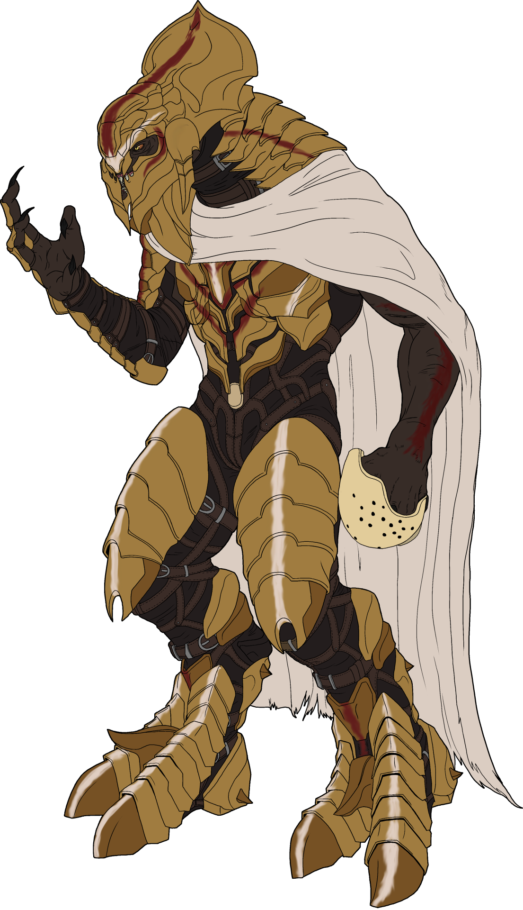

This piece is not finished and will be updated to be a complete piece!!
After New Year’s I got hit by a Big Art Block (as is the case it seems with every New Year’s…. must be alcohol’s fault) So I decided to start learning The Kaidon’s new armor he wears in the Reclaimer Saga of Halo. So here is the badass Keith David voiced Sangheili Warrior Ruler!